使用Lucene对地理数据进行空间搜索
Lucene支持的空间关系
Lucene支持的的空间拓扑查询有下面几种
下图截自lucene spatial-extras包的org.apache.lucene.spatial.query.SpatialOperation
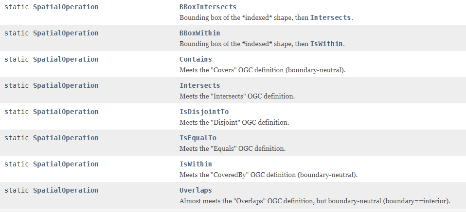
- BBoxIntersects 几何范围(矩形)相交
- BBoxWithin 几何范围(矩形)内含
- Contains 包含
- Intersects 相交
- IsDisjointTo 相离
- IsEqualTo 相等
- IsWithIn 内含
- Overlaps 重叠
Intersects相交
Intersects returns t (TRUE) if the intersection does not result in an empty set. Intersects returns the exact opposite result of disjoint.
如果2个地理实体的交集不为空,那么它们相交。2个地理实体相交Intersects和不相交Disjoint的结果正好相反
2个实体相交有2面多种情况
The intersects predicate(断定) will return TRUE if the conditions of any of the following pattern matrices returns TRUE.
如果2个实体内部相交，那么它们相交
The intersects predicate returns TRUE if the interiors of both geometries intersect(横断,横切,横穿 ;线条,道路等相交,交叉).
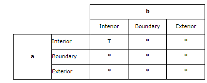
如果2个实体的边相交,那么它们相交
The intersects predicate returns TRUE if the boundary(分界线;范围;球场边线) of the first geometry intersects the boundary of the second geometry.
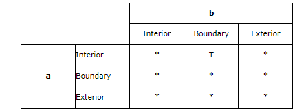
如果一个实体的边和另一个实体的内部相交，那么它们相交
The intersects predicate returns TRUE if the boundary of the first geometry intersects the interior of the second.
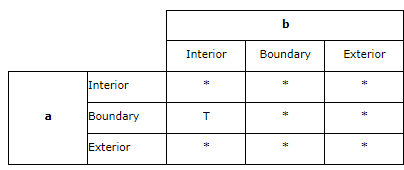
如果2个实体的边相交，
The intersects predicate returns TRUE if the boundaries of either geometry intersect.
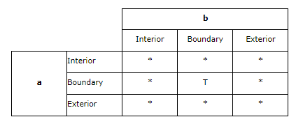
Disjoint 不相交
Disjoint returns t (TRUE) if the intersection of the two geometries is an empty set.
如果2个地理实体的交集是空，那么他们不相交
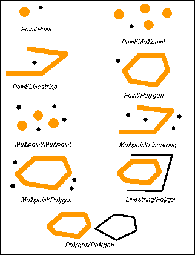
IsEqualTo 等于
Equal returns t (TRUE) if two geometries of the same type have identical X,Y coordinate values.
相等意味着2个地理实体拥有相同的类型和XY值
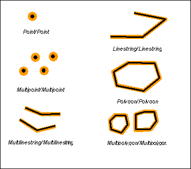
Overlap 重叠
Overlap比较2个相同维度的地理几何体并且如果他们的交集结果集与2者都不相同但是是同一个维度的，那么返回true
Overlap compares two geometries of the same dimension(尺寸面积范围) and returns t (TRUE) if their intersection set results in a geometry different from both but of the same dimension.
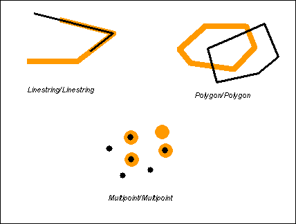
Overlap returns t (TRUE) only for geometries of the same dimension and only when their intersection set results in a geometry of the same dimension. In other words, if the intersection of two polygons results in polygon, then overlap returns t (TRUE).
当多个同一维度的地理实体交集的结果集在同一个维度,换句话说，如果2个面的交集是一个面，那么他们相交
This pattern matrix applies to polygon/polygon, multipoint/multipoint and multipolygon/multipolygon overlays. For these combinations the overlap predicate returns TRUE if the interior of both geometries intersects the others interior and exterior.
Touch 一般是指边界相交
如果两个几何体的共同点都不相交于两个几何图形的内部，那么touch为true。最少有一个几何体必须是线、多边形、多线，或多面。
Touch returns t (TRUE) if none of the points common to both geometries intersect the interiors of both geometries. At least one geometry must be a linestring, polygon, multilinestring, or multipolygon.
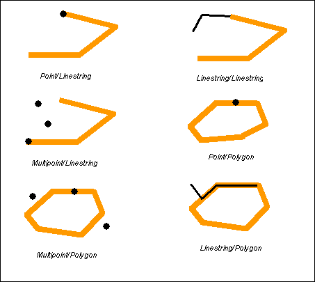
任一几何体边界相交 或 其中一个几何体内部和其他的几何体的边界相交
Touch returns TRUE if either of the geometries’ boundaries intersect or if only one of the geometry’s interiors intersects the other’s boundary.
The pattern matrices show us that the touch predicate returns TRUE when the interiors of the geometry don’t intersect and the boundary of either geometry intersects the others interior or boundary.
The touch predicate returns TRUE if the boundary of one geometry intersects the interior of the other but the interiors do not intersect.
Cross 交叉
Cross returns t (TRUE) if the intersection results in a geometry whose dimension is one less than the maximum dimension of the two source geometries and the intersection set is interior to both source geometries. Cross returns t (TRUE) for only multipoint/polygon, multipoint/linestring, linestring/linestring, linestring/polygon, and linestring/multipolygon comparisons.

Cross returns t (TRUE) if the dimension of the intersection is one less than the maximum dimension of the source geometries and the interiors of both geometries are intersected.
This cross predicate pattern matrix applies to multipoint/linestring, multipoint/multilinestring, multipoint/polygon, multipoint/multipolygon, linestring/polygon, and linestring/multipolygon. The matrix states that the interiors must intersect and that at least the interior of the primary (geometry a) must intersect the exterior of the secondary (geometry b).
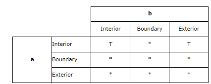
This cross predicate matrix applies to linestring/linestring, linestring/multilinestring, and multilinestring/multilinestring. The matrix states that the dimension of the intersection of the interiors must be 0 (intersect at a point). If the dimension of this intersection was 1 (intersect at a linestring) the cross predicate would return FALSE but the overlap predicate would return TRUE.
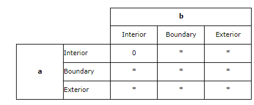
Within(第一个完全在第二个中)
如果第一个几何体完全在第二个几何体中，
Within returns t (TRUE) if the first geometry is completely within the second geometry. Within tests for the exact opposite result of contains.
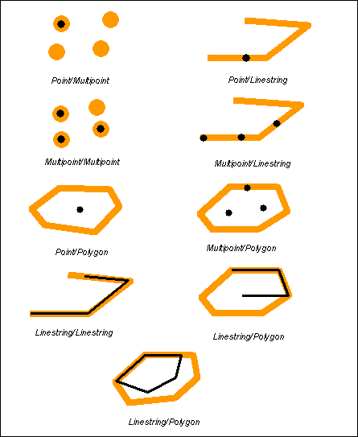
如果第一个几何体完全在第二个几何体中 ,第一个几何体的边界和内部不允许和第二个几何体的外部相交,2个几何体不能相等
Within returns t (TRUE) if the first geometry is completely inside the second geometry. The boundary and interior of the first geometry are not allowed to intersect the exterior of the second geometry and the first geometry may not equal the second geometry.
The within predicate pattern matrix states that the interiors of both geometries must intersect and that the interior and boundary of the primary geometry (geometry a) must not intersect the exterior of the secondary (geometry b).
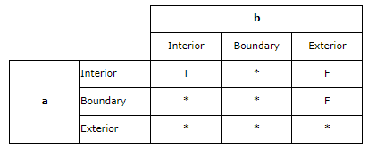
Contains(第二个完全在第一个中)
Contains returns t (TRUE) if the second geometry is completely contained by the first geometry. The contains predicate returns the exact opposite result of the within predicate.
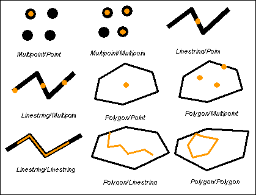
第二个几何体完全在第一个几何体中,第二个几何体的内部和边界不允许和第一个几何体外部相交，并且几何体之间不能相等
Contains returns t (TRUE) if the second geometry is completely inside the first. The boundary and interior of the second geometry are not allowed to intersect the exterior of the first geometry and the geometries may not be equal.
The pattern matrix of the contains predicate states that the interiors of both geometries must intersect and that the interior and boundary of the secondary (geometry b) must not intersect the exterior of the primary (geometry a).
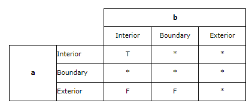
简洁版本
| 相等(Equals)： | 几何形状拓扑上相等。 |
|---|---|
| 脱节(Disjoint)： | 几何形状没有共有的点。 |
| 相交(Intersects)： | 几何形状至少有一个共有点（区别于脱节） |
| 接触(Touches)： | 几何形状有至少一个公共的边界点，但是没有内部点。 |
| 交叉(Crosses)： | 几何形状共享一些但不是所有的内部点。 |
| 内含(Within)： | 几何形状A的线都在几何形状B内部。 |
| 包含(Contains)： | 几何形状B的线都在几何形状A内部（区别于内含） |
| 重叠(Overlaps)： | 几何形状共享一部分但不是所有的公共点，而且相交处有他们自己相同的区域。 |
使用Lucene进行空间搜索
Lucene进行空间搜索是先构造一个你想去搜索(个人理解是碰撞)的几何体,然后用这个几何体去搜索相交，不相交，包含等的空间数据
public static void main(String[] args) {
File luceneDir=new File("/data/lucene");//lucene数据存放的路径
Path path= Paths.get(luceneDir.getAbsolutePath());
Directory indexDirectory= null;
IndexReader indexReader = null;
IndexSearcher indexSearcher=null;
try {
indexDirectory = FSDirectory.open(path);
indexReader = DirectoryReader.open(indexDirectory);
indexSearcher = new IndexSearcher(indexReader);//构造IndexSearcher
BooleanQuery.Builder builder = new BooleanQuery.Builder();// boolean组合查询构建器
WKTReader reader = new WKTReader();
WKTWriter writer = new WKTWriter();
String wktString="POINT(120.4464 30.2237)";//构建一个点
Geometry bufferBefore;//JTS的Geometry
try {
bufferBefore = reader.read(wktString);
double BUFFER=2500;//缓冲250米
BUFFER=BUFFER/111000;//因为上面POINT(120.4464 30.2237)是4326坐标系,所以需要转换成度,这里111000也是大致的值,需要精确的值需要自己算
Geometry bufferAfter = bufferBefore.buffer( BUFFER, 8, BufferOp.CAP_ROUND);
wktString = writer.write(bufferAfter);//生成的这个缓冲器的wkt
System.out.println(wktString);
} catch (com.vividsolutions.jts.io.ParseException e1) {
e1.printStackTrace();
}
Shape shp;
try {
JtsSpatialContextFactory factory = new JtsSpatialContextFactory();//创建JtsSpatialContextFactory工厂类
//spatial4j/jts实现的 SpatialContext: 用于获得距离计算Calculator以及解析形状等。其属于spatial4j包中，该包中还有各种Shape及判断各Shape间的相交情况。JtsSpatialContext(jts包)用于处理多边形等情况。
factory.srid = 4326;// 赋予坐标系
factory.autoIndex = true;// 对于通过 ShapeReader获取的jtsGeometry几何图形进行优化,自动索引
// 根据srid不同获取不同的模型参数:4326采用椭球模型 sphere ,900913采用欧几里得平面坐标系flatPlane 不使用大地测量坐标系，而使用欧几里得平面坐标系进行计算maxiaohui
String model = "sphere";//4326是sphere 900913是flatPlane
factory.geo =true;//是否使用GeoHash进行索引 4326 true 900913 false
final JtsSpatialContext ctx2 = new JtsSpatialContext(factory);//这样做只是为了创建一个Rectangle,下面的new RectangleImpl需要用到
Envelope env = new Envelope(-180, 180, 90, -90);//900913是 new Envelope(-20037508.3427892, 20037508.3427892, 20037508.3427892, -20037508.3427892);
factory.worldBounds = new RectangleImpl(env.getMinX(), env.getMaxX(), env.getMinY(), env.getMaxY(), ctx2);//为factory设置worldbounds，该属性来自父类SpatialContextFactory
JtsSpatialContext ctx = factory.newSpatialContext();
org.locationtech.spatial4j.io.WKTReader wktReader=new org.locationtech.spatial4j.io.WKTReader(ctx, new SpatialContextFactory());
shp = wktReader.parse(wktString);
String operationArgs ="Intersects";
SpatialOperation operation = SpatialOperation.get(operationArgs);
SpatialArgs spatialArgs = new SpatialArgs(operation, shp);
SpatialPrefixTree spt = new GeohashPrefixTree(ctx, 23);//GeohashPrefixTree是SpatialPrefixTree的子类 第一个参数是JtsSpatialContext第二个参数是最大层级
SpatialStrategy strategy = new RecursivePrefixTreeStrategy(spt, "Geometry");
Query spatialQuery = strategy.makeQuery(spatialArgs);
builder.add(spatialQuery, BooleanClause.Occur.MUST);
//再加上Name匹配
// Term term = new Term("Name", "杭州*");
// Query query = new WildcardQuery(term);
//builder.add(query, BooleanClause.Occur.MUST);
} catch ( java.text.ParseException e) {
e.printStackTrace();
}
Query query = builder.build();
TopDocs docs=indexSearcher.search(query,10);
System.out.println("结果条数:"+docs.totalHits);
for(ScoreDoc doc:docs.scoreDocs){//获取查找的文档的属性数据
int docID=doc.doc;
Document document =indexSearcher.doc(docID);
String str="名称:"+document.get("Name")+",地址："+document.get("Address")+"，X："+document.get("X")+"，Y:"+document.get("Y")+" WKT:"+document.get("wkt");
System.out.println("机场信息:"+str);
}
//关闭
indexDirectory.close();
indexReader.close();
indexDirectory.close();
} catch (IOException e) {
e.printStackTrace();
}
}
结果:
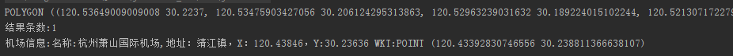
我们将机场实际经纬度和查询点放到地图上直观 的看一下
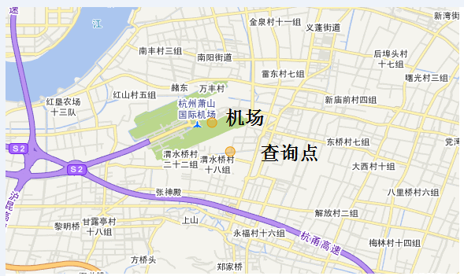
我们将输出的wkt转成面在地图上看下
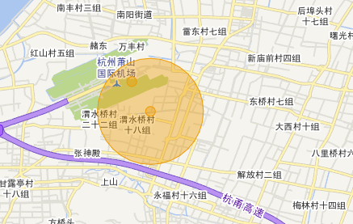
我们再扩大范围
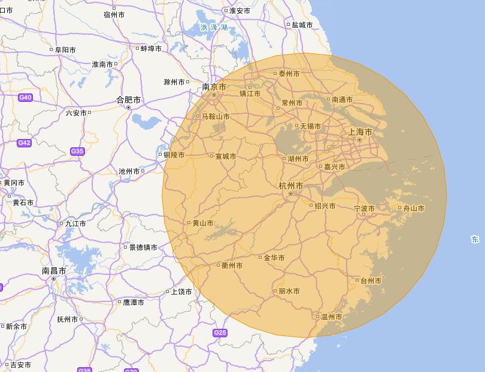
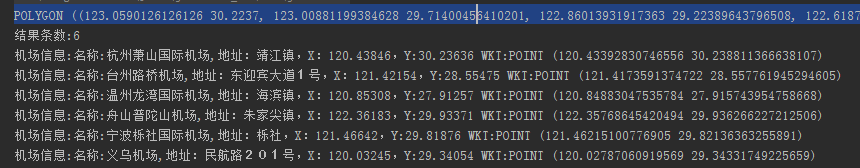
对于上述代码中一些方法的解释
JTS的Geometry有buffer方法，可以进行缓冲,例如一个点缓冲成一个圆形面等
下面截图来自JTS Geometry的API截图
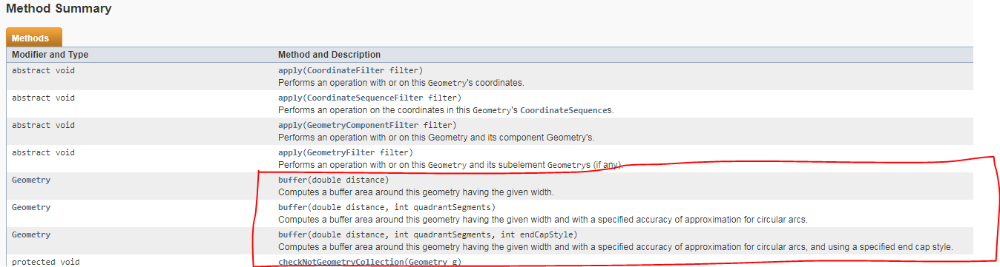
buffer(double distance, int quadrantSegments, int endCapStyle)Computes a buffer area around this geometry having the given width and with a specified accuracy of approximation for circular arcs, and using a specified end cap style.计算给定的宽度和指定的圆弧逼近精度的几何形状周围的缓冲区，并使用指定的端点样式。
第二个参数意思是
the number of line segments used to represent a quadrant of a circle
用于表示圆的象限的线段数。意思就是拟合的线段数
第三个参数: 端点样式有下面几种,圆弧形,粗的,平直的
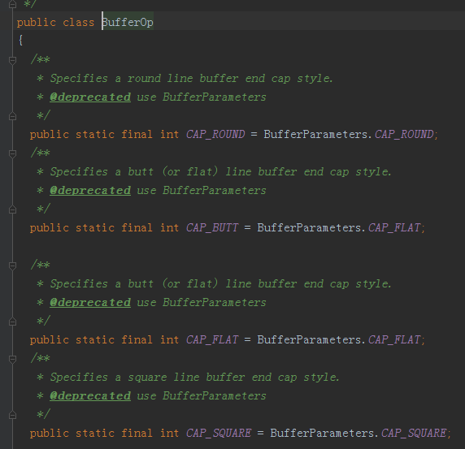
参考文献
http://edndoc.esri.com/arcsde/9.1/general_topics/understand_spatial_relations.htm
This blog is under a CC BY-NC-SA 3.0 Unported License
本文链接：http://hogwartsrico.github.io/2017/03/21/SpatialSearch-By-Lucene/